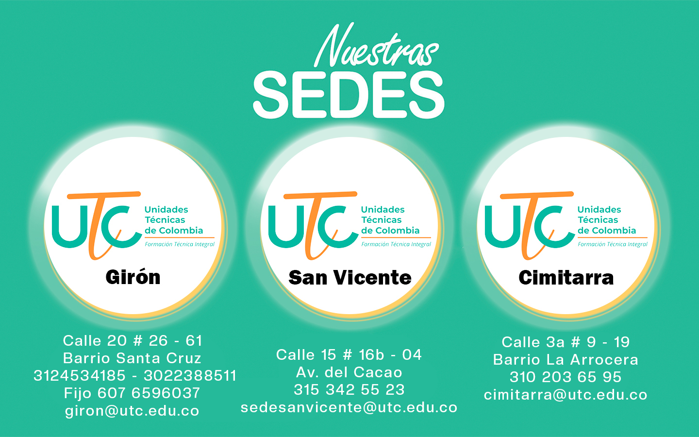

Eventos
Rotaciones, fase productiva y actividades académicas de nuestras sedes.
¡Hola, estudiante!
Accede rápidamente a contacto, redes sociales y pagos en línea desde un solo lugar.
Mantente al día con la vida académica de la UTC
Rotaciones, fase productiva y actividades académicas de nuestras sedes.
Consulta fechas importantes, períodos académicos y cronogramas institucionales.
Ver calendarioNovedades, comunicados y actualizaciones de programas técnicos laborales.
Somos una instituciòn educativa que cumple con los procesos de formación y certificación de calidad Icontec, brindando educación de calidad a nuestros estudiantes.
Nuestro Grupo de docentes, te esperan para brindarles capacitación de calidad pensando en el desarrollo del talento humano, el ser y el saber hacer.
Nuestras aulas de clases estan disponibles para el crecimiento de nuestros estudiantes, contamos con laboratorios adecuados para cada proceso de formación
Programas Técnicos
Estudiantes Egresados
Nuestros Estudiantes Matrículados
Docentes
Las UNIDADES TÉCNICAS DE COLOMBIA – UTC, es una institución de educación para el trabajo y el desarrollo humano como factor esencial del proceso educativo de la persona y componente dinamizador en la formación de técnicos laborales y expertos en las artes y oficios, mediante el ofrecimiento del servicio de educación integral en el ámbito técnico laboral y en la modalidad presencial, virtual y a distancia.
Estamos enfocados en la importancia del aprendizaje, para fomentar el trabajo y el talento humano.
Leer MásAcompañar a nuestros estudiantes es la mejor decisión en la construcción personal en esta vida.
Leer MásEn la UTC contamos con herramientas digitales que ayudan al crecimiento de la formación y preparan a nuestros estudiantes para el futuro.
Leer MásEn la UTC el poder comunicarnos y saber que sienten nuestros estudiantes es una prioridad.
Leer MásLa mayor felicidad es ver cómo nuestros estudiantes dan testimonio de los procesos de aprendizaje.
Leer MásEn la UTC estamos certificados por Icontec, lo que permite que la educación tenga estadar de calidad y esta ayude a mejorar los procesos de formación y la busqueda de prácticas
Leer MásNuestro Grupo Administrativo está listo para servir.
Desde la Coordinacón Académica estamos listos para guiarte en el procesos de nuestra formación .
Desde el aréa administrativa de San Vicente del Chucuri estamos listos para servirte.
Desde el aréa administrativa de cimitarra estamos listos para servirte.
Desde el aréa administrativa de Girón estamos listos para servirte.
